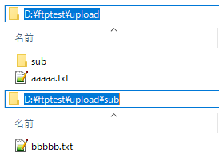
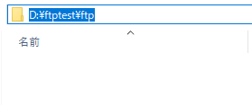
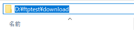
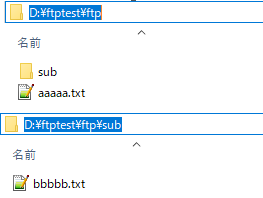
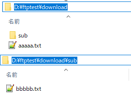
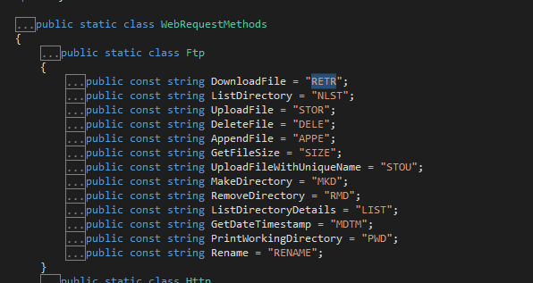

[C#] FTPに接続してファイルダウンロード、アップロードする方法
こんにちは。明月です。
この投稿はC#でFTPに接続してファイルダウンロード、アップロードする方法に関する説明です。
プログラム通信上でよく使うプロトコールはhttp、mail(メール)があるし、FTPがあります。
Sambaもネットワーク通信ですが、プロトコールではなく、ユーティリティ名だし、プログラム内で通信設定が必要なことではなく、OS側でネットワークドライブを割り当てして使うかLinux環境ならMountして内部ディスクみたいに使うので、プログラム内で別途で開発が必要なことではないです。
率直に全然要らないことではないですが、しやすい方法を置いて大変に開発する必要はありません。
最近はCloudやWebサーバのREST APIを利用するか、またはHttpヘッダを利用してContext-typeをapplication/octet-streamに指定して直接にウェブサーバにアップロード、ダウンロードする方法でファイルを管理するので、以前みたいにFTPをよく使いません。
また、ファイルストレージではなく、アプリサーバ(ゲームサーバなど)でも以前みたいに直接にサーバを開発することより、Webサーバにつけて使う方法になったので、データ格納サーバ(FTPサーバ)を別途で構築せずに開発するのが最近のトレンドです。(必ずWebサーバではなく仕様によって違います。)
でも、逆にFTPプロトコールはHttpプロトコールと似ていることが多し、以前より良いライブラリも多いので、よく使うことになると様々なサービスのパフォーマンス改善によくなると思います。
以前にFTPサーバを構築する方法に関して説明したことがあるから参考してください。
link - [Window] WindowでFTPサーバを構築する方法
link - [CentOS] FTPインストールする方法(vsftpd)
using System;
using System.Collections.Generic;
using System.Net;
using System.IO;
namespace FTPConnector
{
class Program
{
// FTPに接続するユーザID
private string id = "user";
// FTPに接続するパスワード
private string pwd = "password";
public Program()
{
// ローカルのファイルをFTPサーバにアップロードする関数を呼び出す。
// d:\ftptest\uploadフォルダからFTPサーバにアップロードする。
UploadFileList("ftp://localhost", @"d:\ftptest\upload");
// FTPサーバからファイルをダウンロードする関数を呼び出す。
// FTPサーバからd:\ftptest\downloadにダウンロードする。
DownloadFileList("ftp://localhost", @"d:\ftptest\download");
}
// FTPサーバに接続関数
private FtpWebResponse Connect(String url, string method, Action<FtpWebRequest> action = null)
{
// WebRequestクラスを利用してFTPサーバに接続する。(FtpWebRequestに変換)
var request = WebRequest.Create(url) as FtpWebRequest;
// Binaryタイプで使う。
request.UseBinary = true;
// FTPメソッド設定(下記に別途で説明)
request.Method = method;
// ログイン認証
request.Credentials = new NetworkCredential(id, pwd);
// callback関数を呼び出す。
if (action != null)
{
action(request);
}
// FTPに接続してWebResponseクラスを取得する。(FtpWebResponseに変換)
return request.GetResponse() as FtpWebResponse;
}
// アップロード関数
private void UploadFileList(String url, string source)
{
// アップロードするパスのタイプをチェックする。
var attr = File.GetAttributes(source);
// もし、ディレクトリなら
if ((attr & FileAttributes.Directory) == FileAttributes.Directory)
{
// ディレクトリ情報を取得する。
DirectoryInfo dir = new DirectoryInfo(source);
// ディレクトリ中のファイルリストを取得する。
foreach (var item in dir.GetFiles())
{
// ファイルをアップロードする。(再帰的な呼び出す)
UploadFileList(url + "/" + item.Name, item.FullName);
}
// ディレクトリ中の派生ディレクトリリストを取得する。
foreach (var item in dir.GetDirectories())
{
try
{
// FTPサーバにディレクトリを生成する。
Connect(url + "/" + item.Name, WebRequestMethods.Ftp.MakeDirectory).Close();
}
catch (WebException)
{
// FTPサーバぶ同じ名のディレクトリが存在すればエラーが発生する。
}
// ディレクトリをアップロードする(再帰的な呼び出す)
UploadFileList(url + "/" + item.Name, item.FullName);
}
}
else
{
// ディレクトリではなくファイルの場合、ファイルのストリームを取得する。
using (var fs = File.OpenRead(source))
{
// ファイルをアップロードする。
Connect(url, WebRequestMethods.Ftp.UploadFile, (req) =>
{
// ファイルのサイズを設定
req.ContentLength = fs.Length;
// GetResponse()が呼び出す前にrequestストリームにファイルbinaryを格納する。
using (var stream = req.GetRequestStream())
{
// アップロードする。
fs.CopyTo(stream);
}
}).Close();
// responseオブジェクトのリソースを返却
}
}
}
// ダウンロードする関数
private void DownloadFileList(string url, string target)
{
// fileリストバッファ
var list = new List<String>();
// FTPサーバに接続してファイルとディレクトリストを取得する。
using (var res = Connect(url, WebRequestMethods.Ftp.ListDirectory))
{
// FTPサーバのストリームを取得(リストがテキストみたいなバイナリだ。)
using (var stream = res.GetResponseStream())
{
// データがバイナリなどでバイナリリーダを取得する。
using (var rd = new StreamReader(stream))
{
// 無限ループでバイナリリーダがNULLなら分岐で止まる。
while (true)
{
// binary結果で改行(\r\n)の区分でファイルリストを取得する。
string buf = rd.ReadLine();
// nullならリスト検索が終了
if (string.IsNullOrWhiteSpace(buf))
{
break;
}
// ファイルやディレクトリ情報をバッファに格納
list.Add(buf);
}
}
}
}
// ディレクトリとファイルリストを繰り返す。
foreach (var item in list)
{
try
{
// ファイルをダウンロードする。
using (var res = Connect(url + "/" + item, WebRequestMethods.Ftp.DownloadFile))
{
// ストリームを取得する。
using (var stream = res.GetResponseStream())
{
// streamでファイルを作成する。
using (var fs = File.Create(target + "\\" + item))
{
// ファイル作成する。
stream.CopyTo(fs);
}
}
}
}
catch (WebException)
{
// ファイルならダウンロードができるけどディレクトリならダウンロードするものではないのでエラーが発生する。
// ローカルディレクトリ生成
Directory.CreateDirectory(target + "\\" + item);
// ディレクトリなら再帰的な方法でファイルリストを探索する。
DownloadFileList(url + "/" + item, target + "\\" + item);
}
}
}
// 実行関数
static void Main(string[] args)
{
// プログラムを実行
new Program();
// いずれかのキーを押下するとプログラム終了
Console.WriteLine("Press any key...");
Console.ReadKey();
}
}
}
上のソースをみればFTPからリストを取得する時にディレクトリやファイルの区分がありません。もちろん、検索メソッドをListDirectoryではなく、ListDirectoryDetailでするとファイルとディレクトリの区分ができますが、結果パーシングしなければならないし、様々なことに大変になるのでtry~catchを利用してファイルとディレクトリを区分する方が簡単です。
実はtry~catchで分岐することはパフォーマンスで致命的に悪いのでできればif~elseで作成することができればよいです。
私の場合はソースコードを減らすようにtry~catchを利用しましたが、仕様に合わせて作成してください。
私の場合はFTPサーバを「d:\ftptest\ftp」に設定してアップロードファイルを「d:\ftptest\upload」フォルダからアップロードテストをします。そして、ダウンロードフォルダは「d:\ftptest\download」に設定してダウンロードテストをします。

こんなにあるファイルは「d:\ftptest\ftp」フォルダにアップロードします。

そしてそれをまたダウンロードして「d:\ftptest\download」にダウンロードします。

これから実行しましょう。
別にコンソール出力を残さなかったので何も出力されないです。

FTPサーバにはよくアップロードがされました。

また、FTPからダウンロードすることもよくできました。
私の場合は特別に例を作成することがないので、ファイルを読み込んでFTPにアップロードしました。それをまたダウンロードしてファイルに作成しました。
でも、通信でストリームを利用してバイナリを扱うことなので必ずファイルダウンロードやアップロードだけ使うことではありません。
もちろん、データベースほど頻繁に接続して検索するし格納すればFTPの効率性はすごく落ちますが、DBに格納しようと思うデータに考えたらデータサイズは大きいし、でも頻繁に参照しますが、修正はよくないデータならFTPがちょうどいいではないかと思います。
ここからrequest.Methodに関して説明します。
request.MethodはStringタイプに設定しますが、FTPプロトコールが合わせてメソッドを設定しなければならないです。
link - https://ja.wikipedia.org/wiki/FTPコマンドの一覧
上の例で使ったコマンドはNLSTでリストを取得してSTORでアップロードしました。そしてMKDでFTPにディレクトリを作成しました。後、RETRでファイルをダウンロードしました。
それをC#ではよく使うコマンド別でString変数にあります。

namespace System.Net
{
public static class WebRequestMethods
{
public static class Ftp
{
// ファイルダウンロード
public const string DownloadFile = "RETR";
// リスト検索
public const string ListDirectory = "NLST";
// ファイルアップロード
public const string UploadFile = "STOR";
// ファイル削除
public const string DeleteFile = "DELE";
// ファイルを続けて作成
public const string AppendFile = "APPE";
// ファイルサイズを要請
public const string GetFileSize = "SIZE";
// ファイルアップロード (ファイル名をユニックに。。でもファイル名が同じならOSがわで上書きするけど？)
public const string UploadFileWithUniqueName = "STOU";
// ディレクトリ生成要請
public const string MakeDirectory = "MKD";
// ディレクトリ作成要請
public const string RemoveDirectory = "RMD";
// リストを詳細的に検索
public const string ListDirectoryDetails = "LIST";
// ファイル作成時間を取得
public const string GetDateTimestamp = "MDTM";
// ディレクトリ移動
public const string PrintWorkingDirectory = "PWD";
// ファイル名変更
public const string Rename = "RENAME";
}
}
}
link - https://docs.microsoft.com/en-us/dotnet/framework/network-programming/how-to-upload-files-with-ftp
link - https://stackoverflow.com/questions/2781654/ftpwebrequest-download-file
ここまでC#でFTPに接続してファイルダウンロード、アップロードする方法に関する説明でした。
ご不明なところや間違いところがあればコメントしてください。
- [C#] EMailを送信する方法(System.Net.Mail)2020/04/22 19:00:42
- [C#] ini環境ファイルを使う方法2020/04/22 00:09:39
- [C#] 環境設定ファイルを扱う方法(System.Configuration)2020/04/20 19:37:57
- [C#] Reflectionを利用してクラス複製する方法2020/04/17 00:34:33
- [C#] XMLをXPathを利用してデータを取得する方法2020/04/16 00:47:17
- [C#] NSoupライブラリを利用してXMLとHTMLをパーシングする方法2020/04/14 19:34:15
- [C#] 日付フォーマット2020/04/09 20:53:20
- [C#] ログライブラリ(log4net)を設定する方法2020/04/08 13:04:22
- [C#] Zipの圧縮ファイルを解凍するコードを作成する方法2020/04/07 11:17:44
- [C#] Zip圧縮コードを作成する方法2020/04/06 14:56:13
- [C#] 数字フォーマット(お金表示及び小数点以下表示)2020/04/03 00:38:37
- [C#] コマンド(cmd)を実行する方法(Processクラス)2020/03/31 07:15:40
- [C#] FTPに接続してファイルダウンロード、アップロードする方法2020/03/27 19:20:14
- [C#] HttpWebRequestを利用してウェブページを読み込みする方法2020/03/27 00:23:19
- [C#] Base64のエンコード、デコードする方法2020/03/26 02:19:50
- [C#] 42. ファイルを扱い(IO)とファイルメタデータ(FileInfo)を使い方2021/10/01 20:10:21
- [C#] 41. Taskクラスとasync、awaitを使い方2021/10/01 18:59:14
- [Javascript ] WebのFull calendar(スケジュールカレンダー)の使い方法2021/07/15 21:35:36
- [Java] 56. Web serviceのサーブレット(Servlet)で初期化作業(properties設定)2021/07/02 17:10:36
- [Java] 55. Spring frameworkに文字化けを解決する方法(Encoding設定)2021/06/30 16:37:16
- [Java] 54. Spring frameworkでWeb filterを使う方法2021/06/29 18:25:12
- [Java] 53. ウェブサービス(Web service)でエラーページを処理する方法2021/06/25 13:35:54
- [Design pattern] 1-3. ファクトリメソッドパターン(Factory method pattern)2021/06/23 19:45:37
- [Java] WebSocketでチャット履歴をローディングする方法2021/06/15 18:34:45
- [Java] WebSocketを利用してユーザ(サイト運用者)が他のユーザとチャットする方法2021/06/15 17:20:08
- [Design pattern] 1-2. ビルダーパターン(Builder pattern)2021/06/11 19:06:28
- [Design pattern] 1-1. シングルトンパターン(Singleton pattern)2021/06/09 19:40:05
- [Design Pattern] デザインパターンの紹介2021/06/08 20:42:36
- [Tools] Dbeaver(無料Sql queryブラウザツール)2021/04/28 18:26:49
- [Bootstrap] HTMLデザインのフレームワークのBootstrap紹介2020/07/30 19:06:36